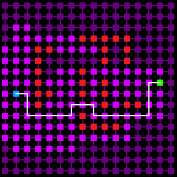

Other projects
Design Games
During my second year in ESAT, I developed some games and one
interactive story
(Spanish) for the Videogames Design subject. Although I developed some games by myself, most of them (the best ones)
were developed in Unity with my classmate and friend
Diego Cosín Martínez.
Those games were a boss fight and two shoot em up.
Oni: KenDen
This was my first mobile game developed for our Publishing subject. Created with Unity, it was published in the Google
Play Store.
The developers in the VSGD team were:
Jorge Segarra Raro,
Diego Cosín Martínez and
me.
I was in charge of the team management and the game design and also programmed some elements such as the movement or the hook.
Raytracer
I worked for a while in a raytracer following the Ray Tracing in One Weekend
tutorial
to learn about how raytracing works.
I didn't finish all of it yet but I will probably continue with it soon.
Cellular Automata
As every other programmer has once programmed, I, also, developed a game of life following olc
tutorial.
Once I finished it, I played with it to obtain different results and also worked on a cave generator.
AI and path finding
I developed an AI project with different agent types (PacMan, Patrolling)
and also created an A* path finding project following, once again, a one lone coder
tutorial.
